01
ClassPass redefined: Case study
Product design
User Research
Design system
Branding
Problem solving

Context
ClassPass is a subscription-based service shook the fitness and wellness industry with a one-stop platform for thousands of top-rated gyms, fitness studios, salons and spas. Customers did not need to sign up for a gym membership, but rather they could pay a monthly fee instead and get access to a variety of fitness classes and wellness activities at different studios and gyms, providing flexibility and diversity in their workout routines.
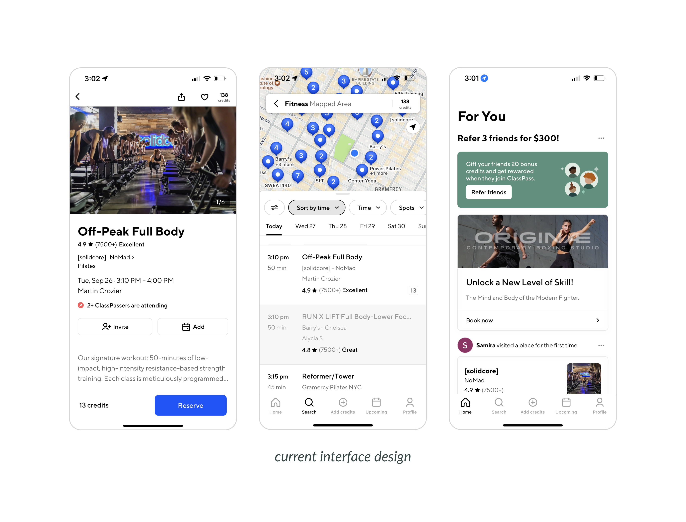
The challenge: Igniting sweat with a smile
The project's goal is to reinvent ClassPass, emphasizing that starting a fitness journey should be fun and energizing, not intimidating. It also aims to achieve a balance by integrating wellness services. The business objective is to create a platform for everyone that provides a wide variety of workouts and wellness services from all around the world while ensuring flexibility.
ClassPass can enhance the user experience by implementing major enhancements. Creating a scheduling platform that is both inviting and easily accessible, can inspire individuals who are new to the realm of fitness to adopt a more active lifestyle and regular gym attendees to venture into diverse training regimens and explore new avenues of physical activity.
ClassPass can enhance the user experience by implementing major enhancements. Creating a scheduling platform that is both inviting and easily accessible, can inspire individuals who are new to the realm of fitness to adopt a more active lifestyle and regular gym attendees to venture into diverse training regimens and explore new avenues of physical activity.
Research objective
1
Determine current and potential users’ major frustrations with the app.
2
Way to incentivize users to stay fit and continue using the app.
3
Define why will users choose this app versus other fitness apps.
4
Define users’ behaviors as they search for workouts.
Early insights
There are a lot of components, a complex user flow that requires multiple clicks to achieve just one goal. It was not specifically personalized to each user and can be intimidating and push away new and unfamiliar users.
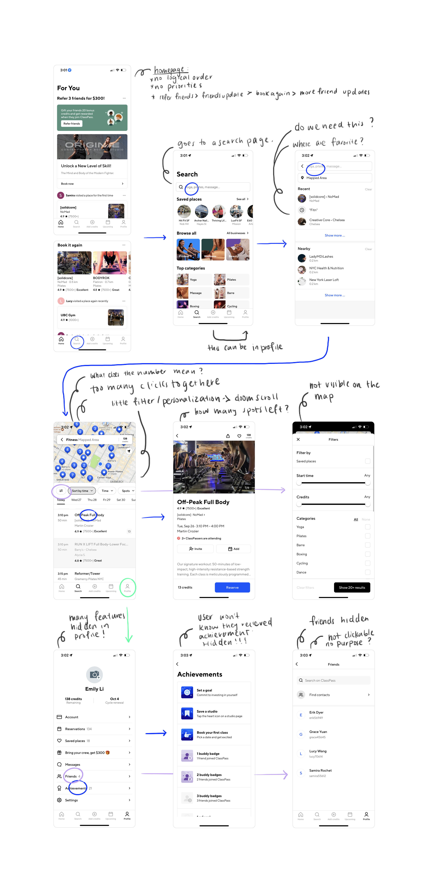
Competitive analysis
Conducted competitive analysis to Orangetheory, Barry’s and Equinox. All with a subscription based membership.
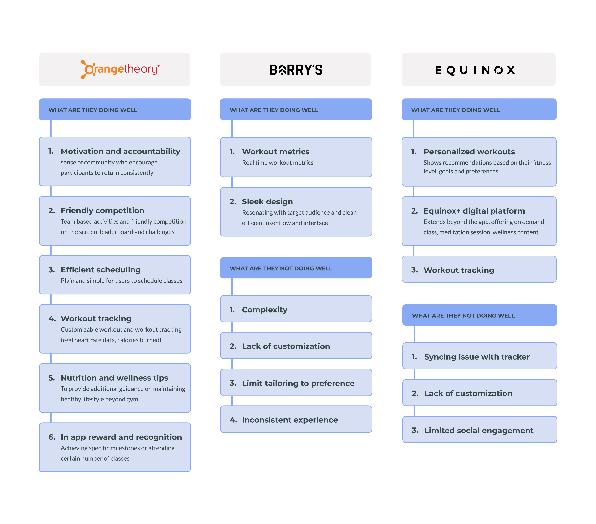
Persona's & empathy map
Developing an app with a specific focus on newcomers to the gym and dedicated fitness enthusiasts. Our primary aim is to create a platform that not only caters to a wide range of needs but also has an inviting atmosphere. With a strong commitment to promoting a steady and unwavering journey toward fitness, we are dedicated to ensuring our app is versatile enough to accommodate users at any stage of their fitness adventure.

Research participant demographics
Interviewed 16 people within the demographic to access the range of
their problems. Here are examples of four interviewees:
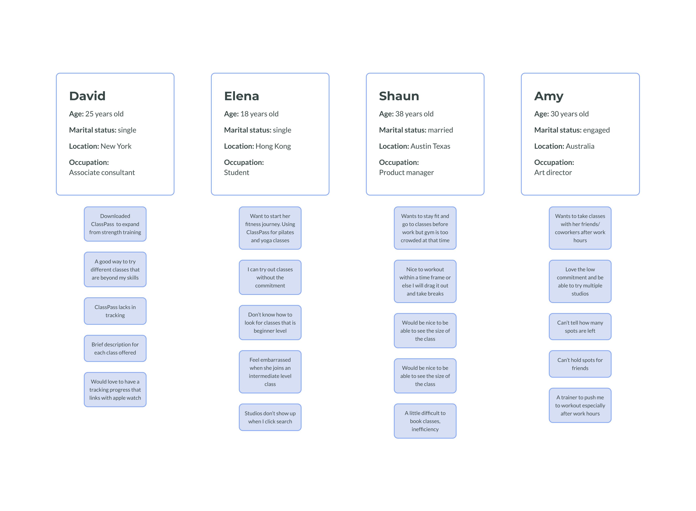
Interview results: features & classpass usage
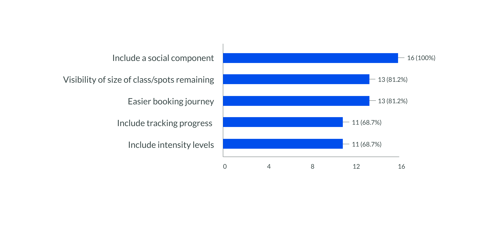
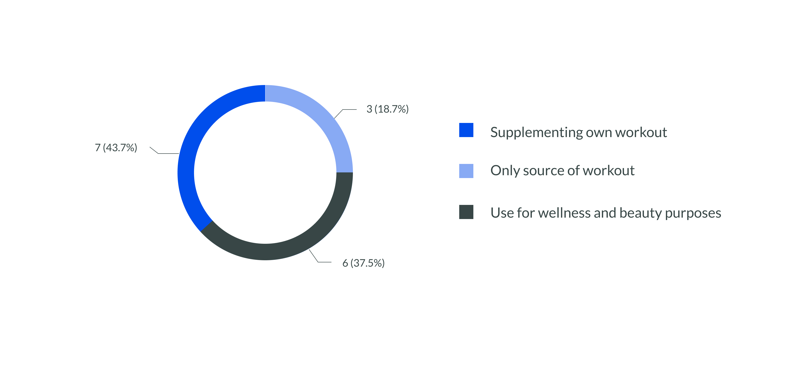
Finalised insights: research conclusion
After interviewing participants within the demographics, it came to a conclusion of the problems of the current interface.
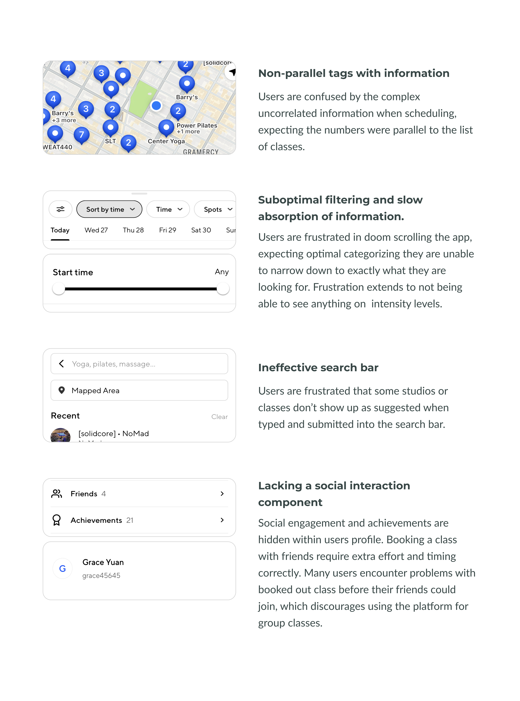
Reframing the problem:
"How might we enhance ClassPass's filtering and personalization features for easier class booking?"
"How might we enhance ClassPass's filtering and personalization features for easier class booking?"
The current interface have problematic user flows that made it complex for users to book a desired class. So how might we help users optimize their search based on their preferences and book a class that best suits their level of fitness?
Solutions
1
Simplify onboarding and intuitive navigation
Easier navigate throughout the app, to find and book classes. Users be able to organize content logically and additional labels for those who need more guidance in their fitness journey.
Easier navigate throughout the app, to find and book classes. Users be able to organize content logically and additional labels for those who need more guidance in their fitness journey.
2
Personalization
Tailored class recommendation based on user’s fitness goals, preference and onboarding profile building.>
Tailored class recommendation based on user’s fitness goals, preference and onboarding profile building.>
3
Social interaction
Encourage social interactions by including a feed page to see friends’ class schedule and workout social posts. Adding in the ability to see how many spots left in each class and option to hold a friends spot for ease of booking.
Encourage social interactions by including a feed page to see friends’ class schedule and workout social posts. Adding in the ability to see how many spots left in each class and option to hold a friends spot for ease of booking.
4
Progress tracking
Fitness progress including attendance and performance metrics. Users are able to import their fitness tracker data into the platform to integrate their workout outside and within the platform.
Fitness progress including attendance and performance metrics. Users are able to import their fitness tracker data into the platform to integrate their workout outside and within the platform.
5
Rewards and incentive
Implementing reward program that offers incentive for attending class regularly, achieve milestone and friendly competitions.
Implementing reward program that offers incentive for attending class regularly, achieve milestone and friendly competitions.
6
Improved
class description
Logical structure and simplified information on intensity level, class structure and equipment needed.
Logical structure and simplified information on intensity level, class structure and equipment needed.
7
Efficient
booking reminder
To minimize no show and cancellation fee, booking reminders will be easily accessed and timely pop ups.
To minimize no show and cancellation fee, booking reminders will be easily accessed and timely pop ups.
8
Intuitive search
No uncertainty, always accurate information and real time availability for each studio and class.
No uncertainty, always accurate information and real time availability for each studio and class.
Framework
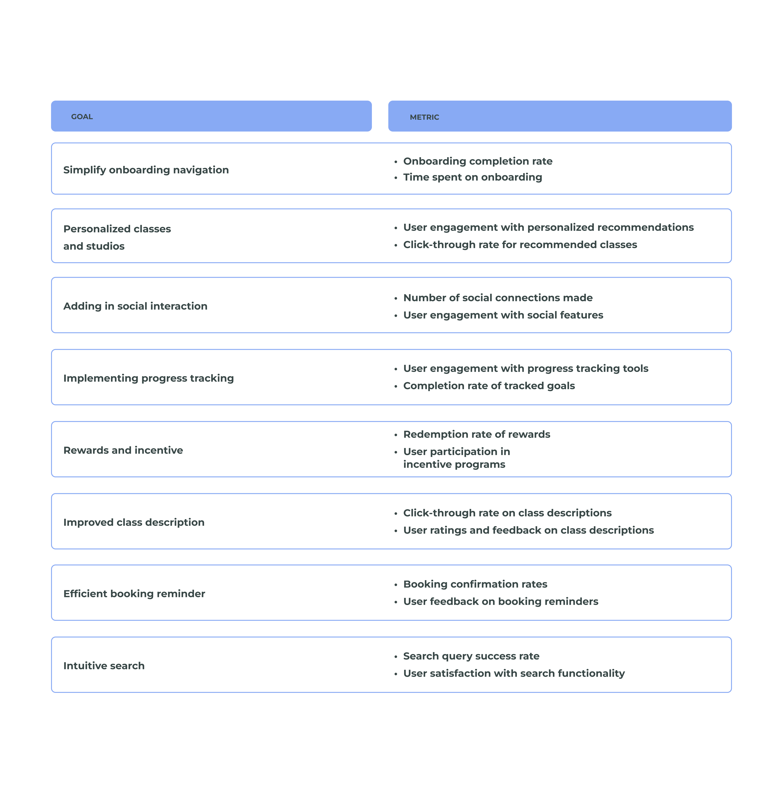
New user flow
Streamlining the user experience when it comes to scheduling classes, with a primary focus on reducing the number of clicks required to make the journey exceptionally efficient. The goal is to make the process of booking a class as smooth and user-friendly as possible, ensuring that the fitness journey is hassle-free from start to finish. We believe that simplicity in user flow not only saves time but also encourages users to engage more with their fitness routine and enjoy the social aspects of their Classpass experience.
1. Keeping in mind of these key design challenges:
2. How might we better understand the users?
3. How might we form a user flow that minimizes the effort in scheduling a class?
4. How might we better adapt and incorporate tracking metrics from other fitness apps?
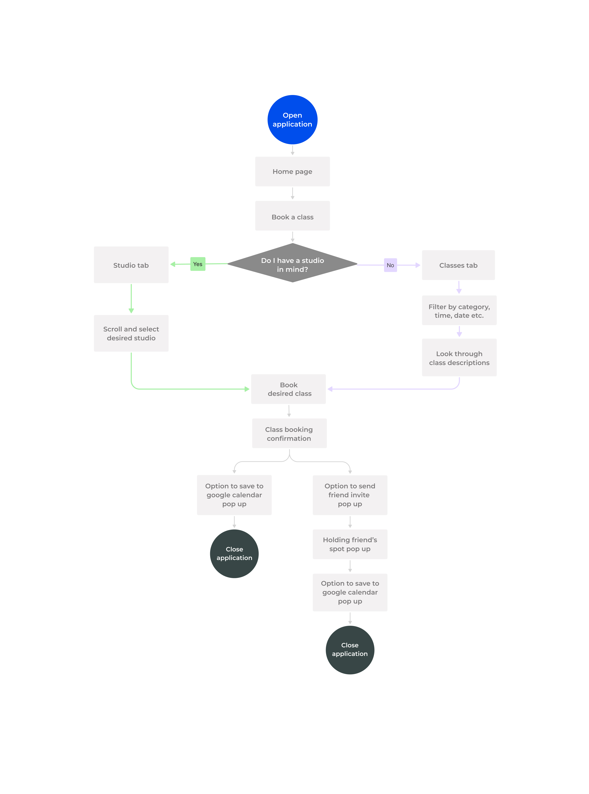
1. Keeping in mind of these key design challenges:
2. How might we better understand the users?
3. How might we form a user flow that minimizes the effort in scheduling a class?
4. How might we better adapt and incorporate tracking metrics from other fitness apps?
Low fidelty sketches

Wireframing
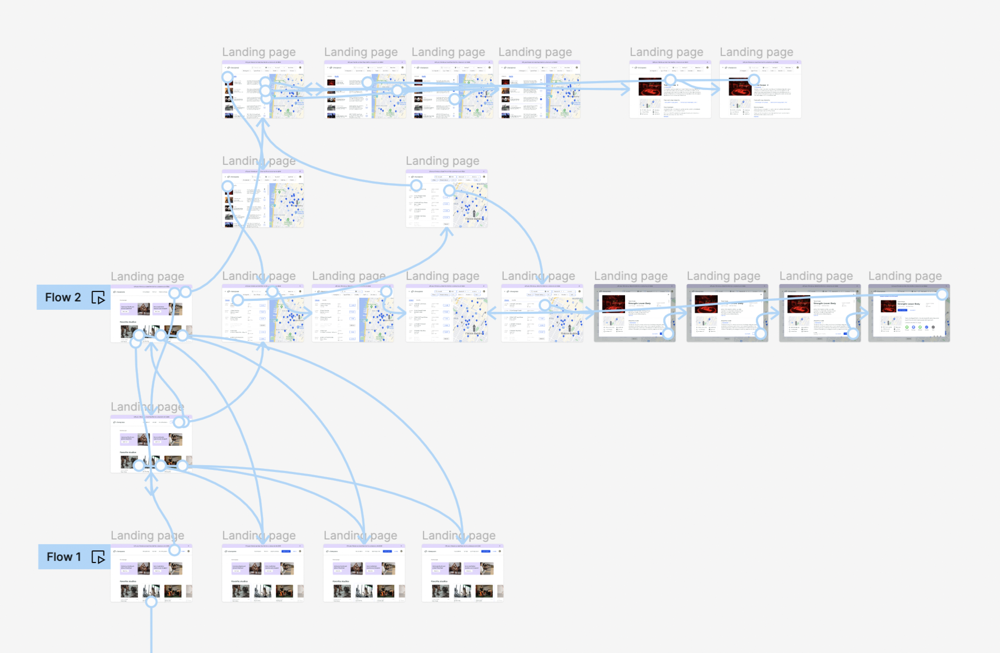
Visual identity
Gentle yet impactful refinements to ClassPass' visual identity, with the goal of crafting a more welcoming user experience that sparks both fitness enthusiasm and tranquility for wellness services.
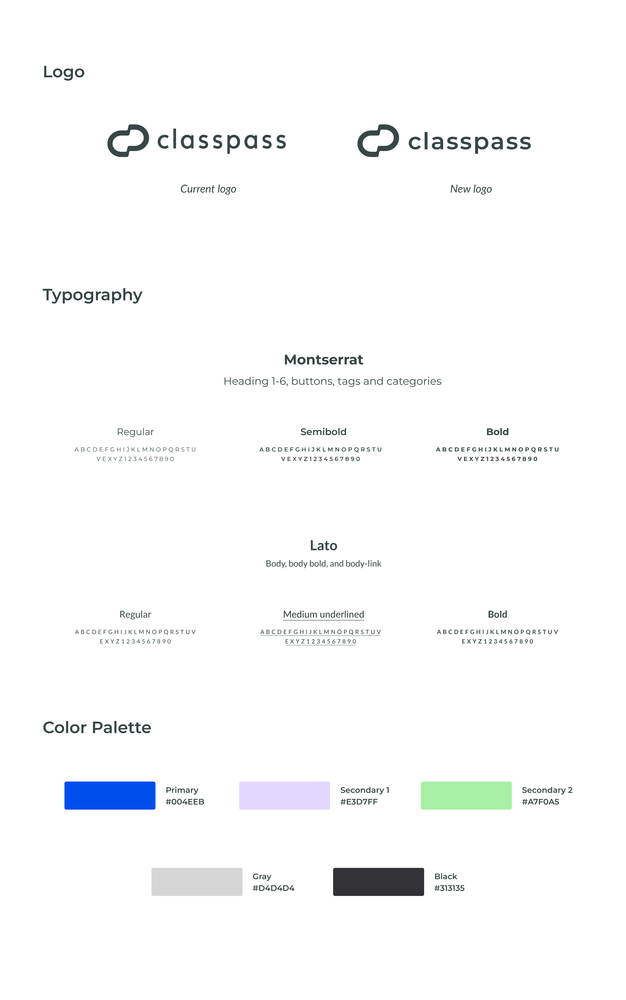
The redesign
Introducing the new ClassPass
Introducing the new ClassPass
ClassPass personalizes and makes users’ fitness journey effortless and easy. Informing users on the type of workout and be able to join classes with their friends at ease and book a massage in three clicks.
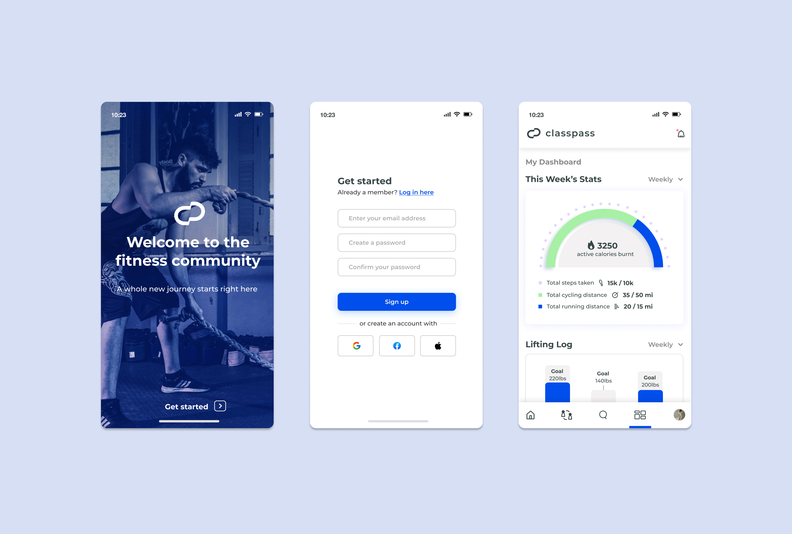
Everything in one platform
Introducing a customized homepage experience that tailors content to individual preferences with recommendations aligned with users' profiles and past class choices. Users are also stayed informed with notifications about new partner studios and the latest in nutrition and wellness articles, ensuring they are always in the loop on the most current trends and insights.
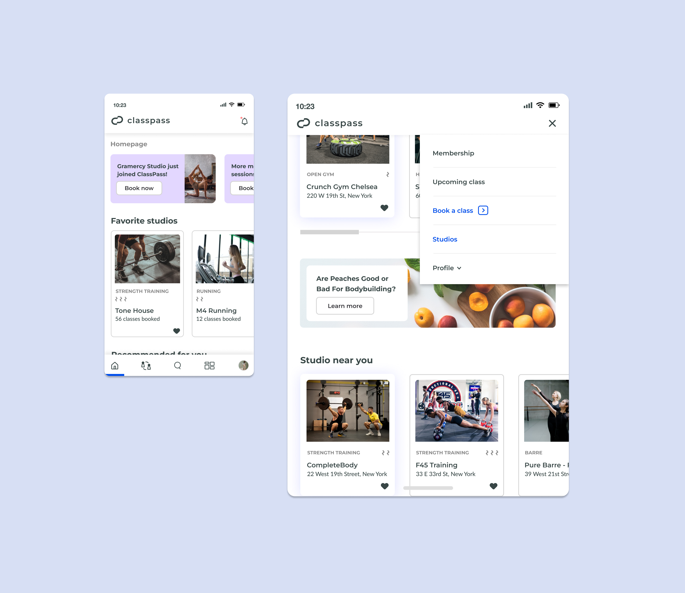
Because life is too short for complicated scheduling
Users have the flexibility to seamlessly switch between "Classes" and "Studios" based on their specific search intent. Now with more refined filters provide a more granular and user-friendly search experience, making it effortless to locate the exact classes you desire. In addition, geotags are labeled with corresponding numbers, simplifying the process of matching locations to the class or studio.
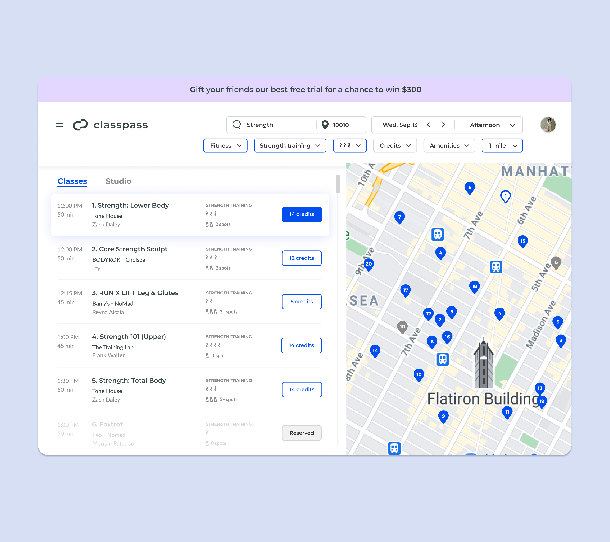
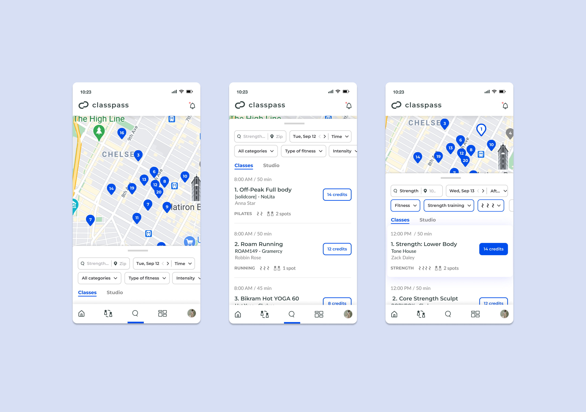
You need it? We got it.
Enhancing the accessibility of studios information through a revamped, intuitive, and clutter-free layout, ensuring that valuable details are readily available and logically organized for a seamless user experience.
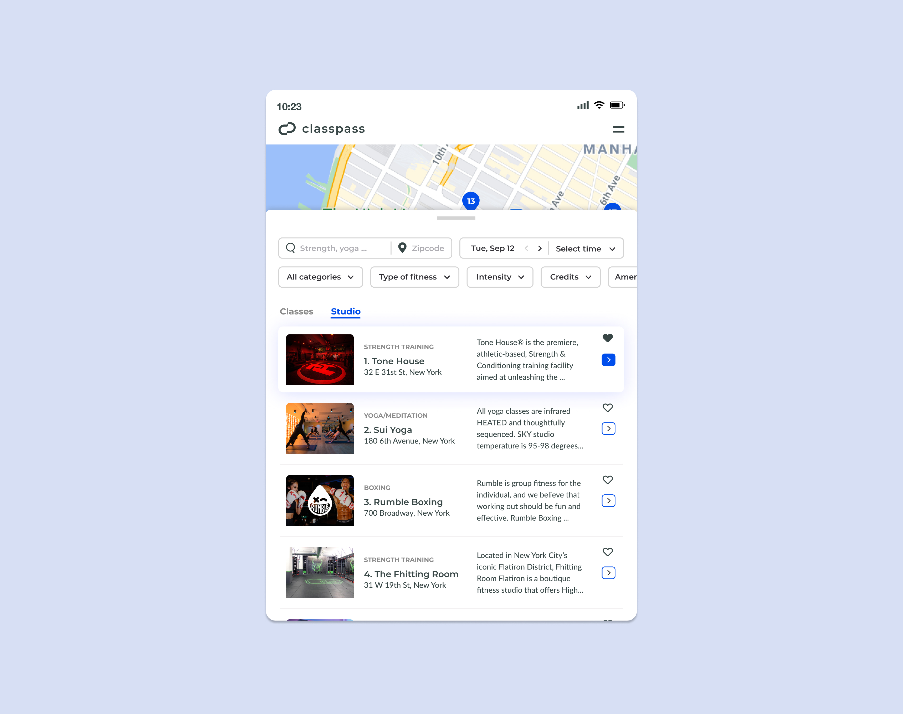
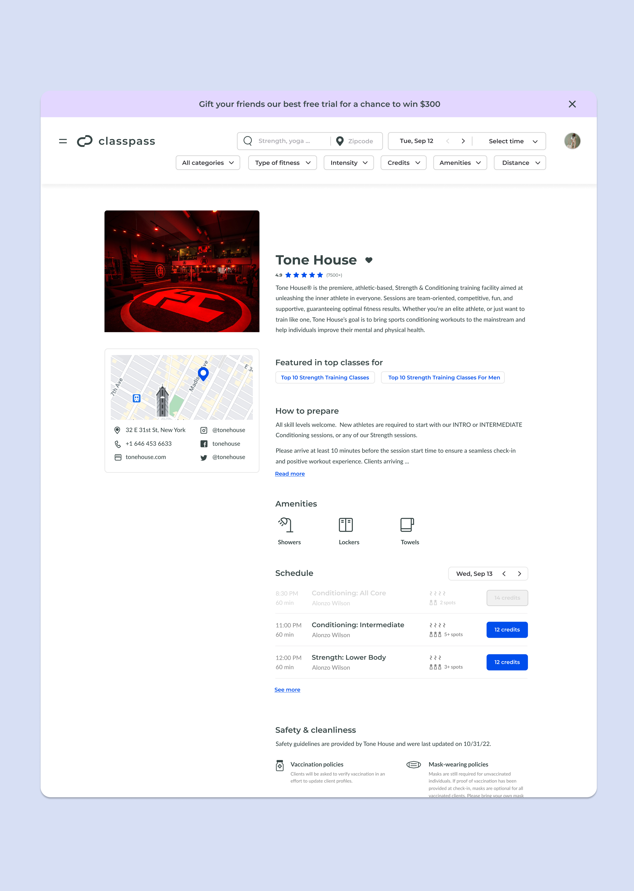
Inspiring confidence together
A comprehensive progress tracking system within ClassPass, allowing users to monitor their fitness journey seamlessly. With the option to seamlessly integrate performance metrics from fitness trackers, everything consolidates neatly in one centralized location. Furthermore, adding in a social element to foster interaction,
enabling users to share their daily workouts and performance stats while gaining visibility into each other's schedules for added motivation and camaraderie.
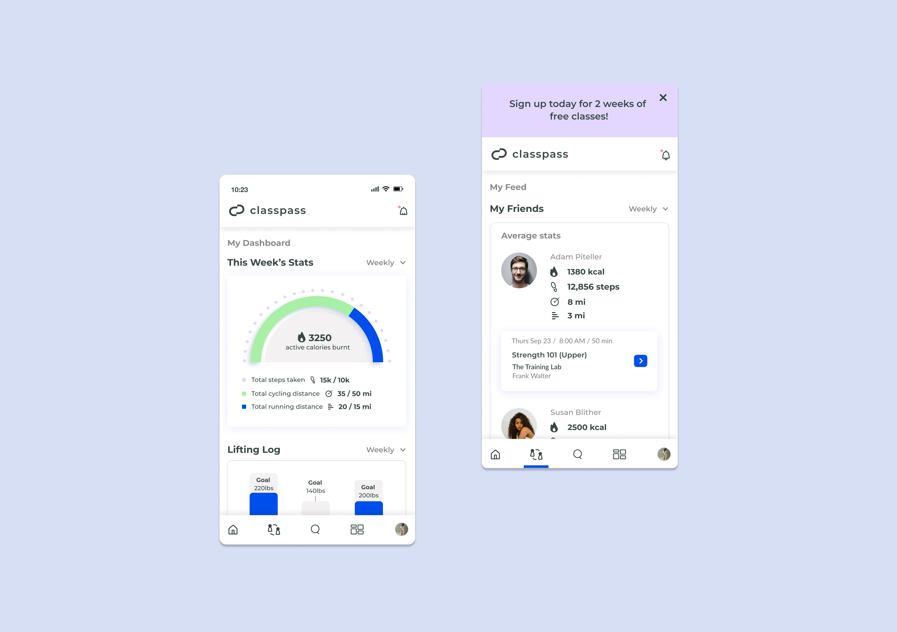
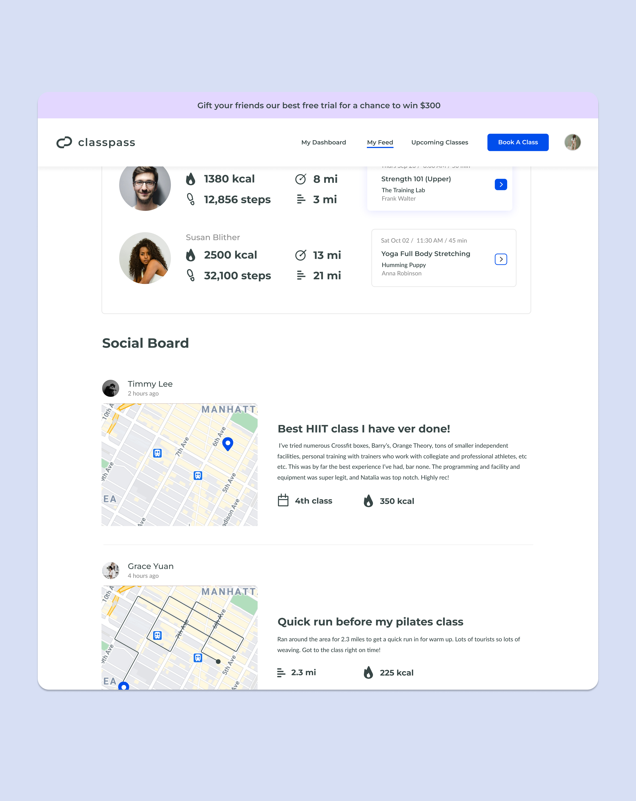
Final takeway:
Inefficiency to optimization
Inefficiency to optimization
In order to optimize the booking experience, we needed to tailor the searched based on the user’s preference and giving them the ability to personalize and narrow down their searches even further. Simplifying the user flow encourages them to take more classes on their own or with their friends and family.
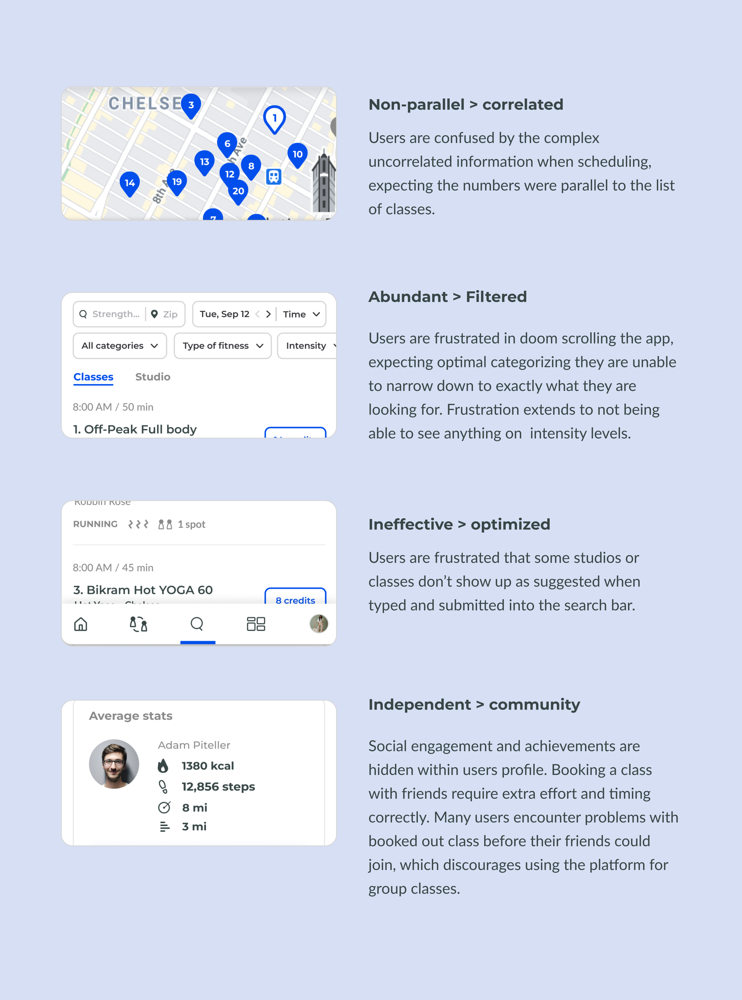
A more inclusive design
The existing ClassPass app posed challenges for users new to fitness due to its poor design. It was difficult to navigate and look for classes and wellness services. The three main issues were:
1. The abundance of content, which required careful condensation and prioritizing layout.
2. The app lacked personalization and detailed information.
3. Unnecessary and repetitive clicks
1. The abundance of content, which required careful condensation and prioritizing layout.
2. The app lacked personalization and detailed information.
3. Unnecessary and repetitive clicks
Design system